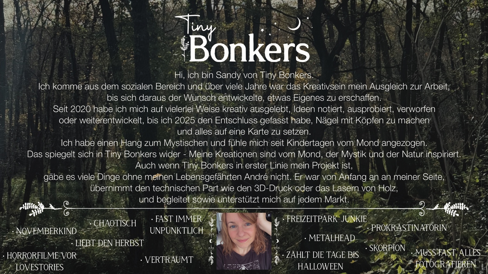
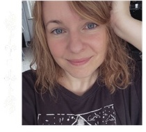

Hi, ich bin Sandy von Tiny Bonkers.
Ich komme aus dem sozialen Bereich und über viele Jahre war das Kreativsein mein Ausgleich zur Arbeit, bis sich daraus der Wunsch entwickelte, etwas Eigenes zu erschaffen.
Seit 2020 habe ich mich auf vielerlei Weise kreativ ausgelebt, Ideen notiert, ausprobiert, verworfen oder weiterentwickelt, bis ich 2025 den Entschluss gefasst habe, Nägel mit Köpfen zu machen und alles auf eine Karte zu setzen.
Ich habe einen Hang zum Mystischen und fühle mich seit Kindertagen vom Mond angezogen. Das spiegelt sich in Tiny Bonkers wider – meine Kreationen sind vom Mond, der Mystik und der Natur inspiriert.
Auch wenn Tiny Bonkers in erster Linie mein Projekt ist, gäbe es viele Dinge ohne meinen Lebensgefährten André nicht. Er war von Anfang an an meiner Seite, übernimmt den technischen Part wie den 3D-Druck oder das Lasern von Holz und begleitet sowie unterstützt mich auf jedem Markt.
Novemberkindchaotischfast immer unpünktlichliebt den HerbstverträumtFreizeitpark-JunkieMetallheadSkorpionzählt die Tage bis Halloweenmuss fast alles fotografieren

← Zurück zur Startseite